School IT Ticketing System
Web-based helpdesk application built with Flask for managing IT support requests in schools — built for fast, SLA-driven issue resolution.
Explore the tools I've built to make IT support faster and customers happier — from helpdesk ticketing to AI-driven diagnostics. Click any project for the implementation details and technologies used.
Web-based helpdesk application built with Flask for managing IT support requests in schools — built for fast, SLA-driven issue resolution.

A cutting-edge, AI-powered security monitoring system that transforms traditional CCTV surveillance into an intelligent solution.

A rule-based expert system providing agricultural guidance to smallholder farmers in Kenya.
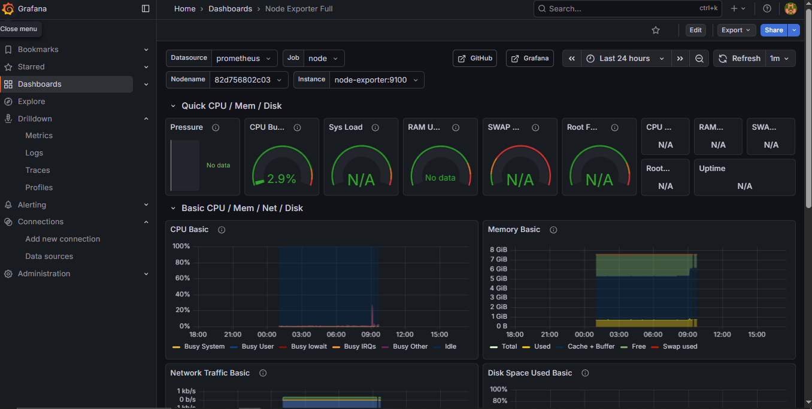
Lightweight solution for Ubuntu Server 24.04 using Prometheus, Node Exporter, and Grafana.

Automated SRE monitoring stack featuring Prometheus, Grafana, and Elasticsearch via Ansible.
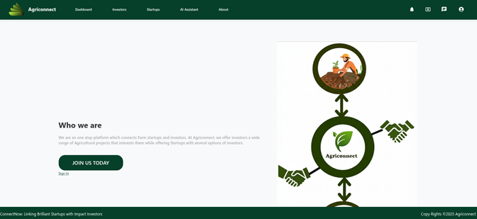
A digital ecosystem built with javascript to bridge the gap between farmers and markets through real-time data.

A community-driven portal utilizing Flask and geolocation to help track and report missing persons efficiently.
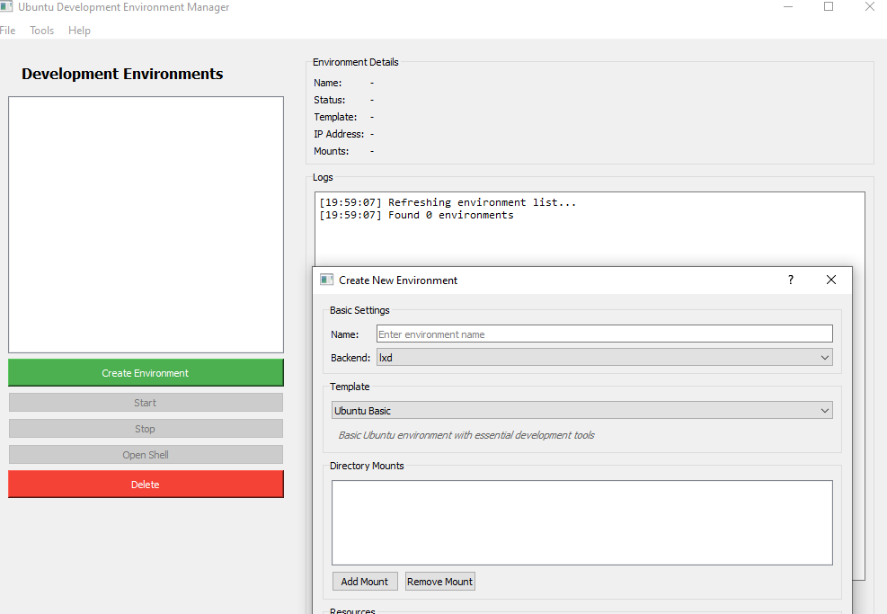
A specialized utility for managing Linux development environments, optimizing workflows for Ubuntu-based workstations.
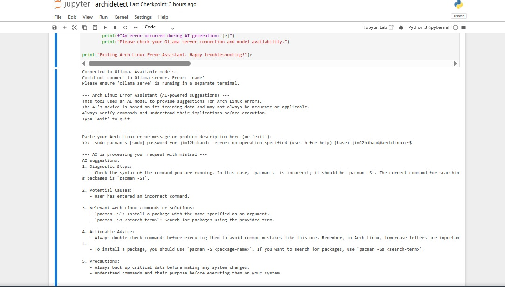
AI-powered CLI tool for diagnosing Arch Linux errors using local LLMs via Ollama.
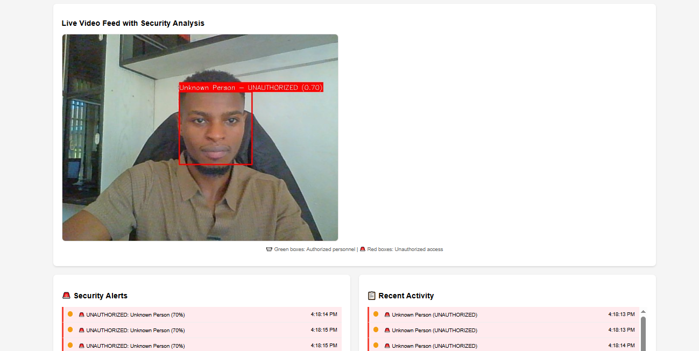

The CCTV AI System is a cutting-edge, AI-powered security monitoring solution that transforms traditional CCTV surveillance into an intelligent, automated security system. Built with Python and modern computer vision technologies, this system provides real-time face detection, personnel recognition, and instant mobile alerts for comprehensive security management.

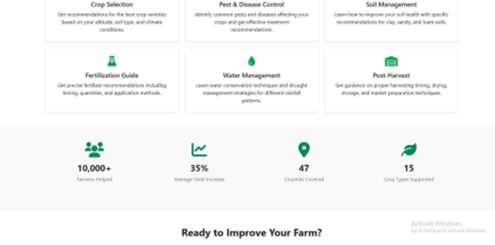
Agriexpert is a rule-based expert system developed as part of a BscIT coursework group project. The system is designed to deliver sustainable and personalized agricultural guidance to smallholder farmers in Kenya, helping them make informed decisions about their farming practices.
The Homelab Orchestrator is an automated SRE (Site Reliability Engineering) monitoring stack designed for homelab environments. It features a comprehensive monitoring solution with Prometheus, Grafana, and Elasticsearch, all deployed and managed via Ansible and Docker for seamless infrastructure automation.
Explore the complete source code, documentation, and deployment instructions: https://github.com/Jim-Karanja/homelab-orchestrator
The Ubuntu Home-Lab Monitoring Stack is a lightweight, containerized monitoring solution designed for Ubuntu Server 24.04. This project provides comprehensive system monitoring using Prometheus to collect metrics via Node Exporter and visualizes them through interactive Grafana dashboards.
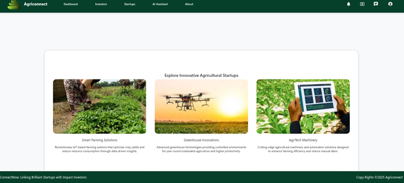
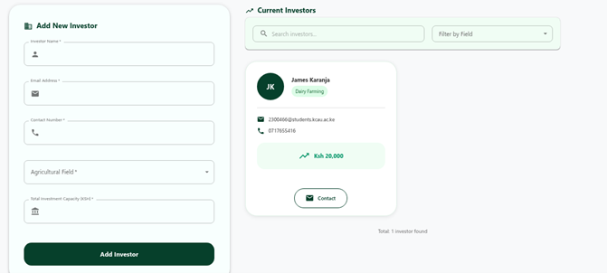
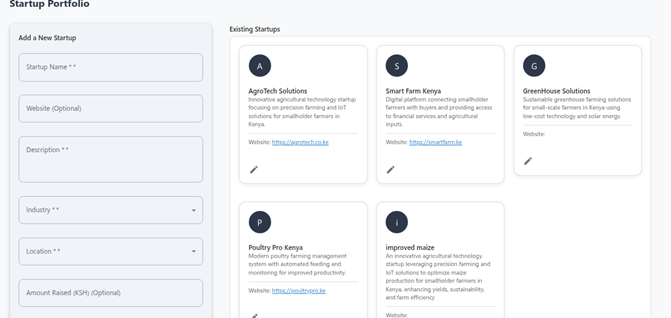
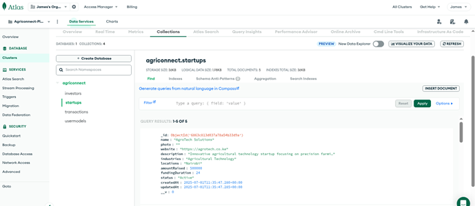
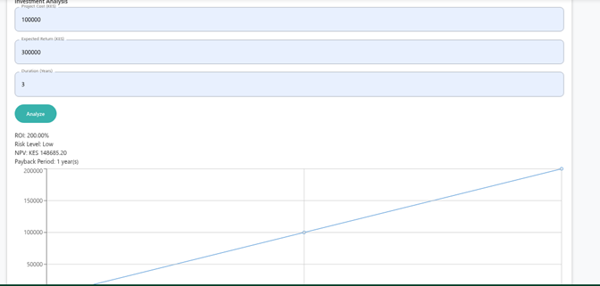
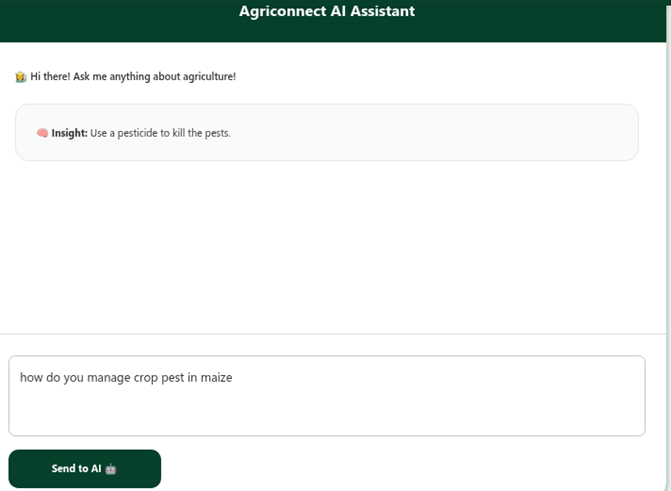
Agriconnect is a web application designed to provide agricultural connectivity and services. Built with modern JavaScript technologies, this platform offers comprehensive solutions for agricultural stakeholders, including farmers, suppliers, and agricultural businesses.
The School IT Ticketing System is a web-based helpdesk application built with Flask for managing IT support requests in educational institutions. It provides a streamlined workflow for students, teachers, and staff to submit IT issues and for IT personnel to efficiently manage and resolve tickets.

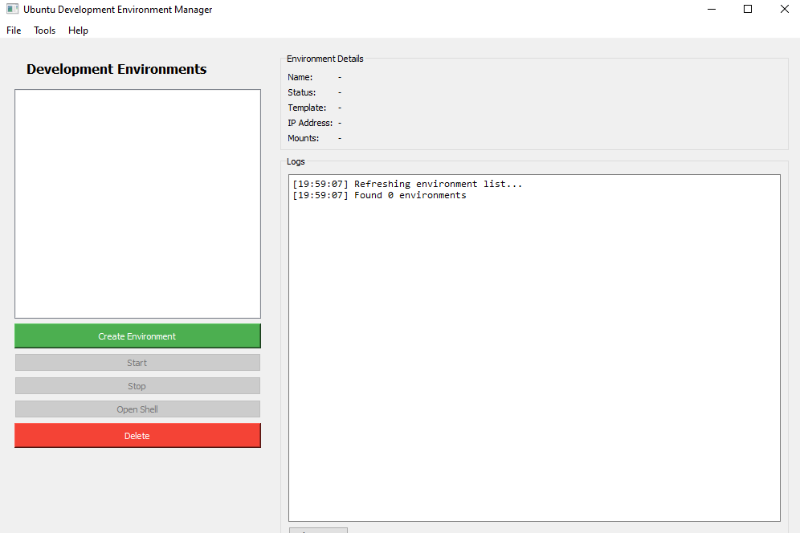
The Ubuntu Development Environment Manager is a comprehensive GUI tool designed to simplify the creation and management of isolated development environments on Ubuntu Desktop. It leverages Canonical's virtualization technologies (Multipass and LXD) to provide developers with pre-configured, reproducible development environments for various programming languages and frameworks.


The Missing Persons App is a comprehensive full-stack management system designed specifically for Kenya to facilitate coordination between law enforcement agencies, NGOs, and the public in locating missing individuals and reuniting families. The system provides a centralized database with web and mobile interfaces for efficient case management and community engagement.
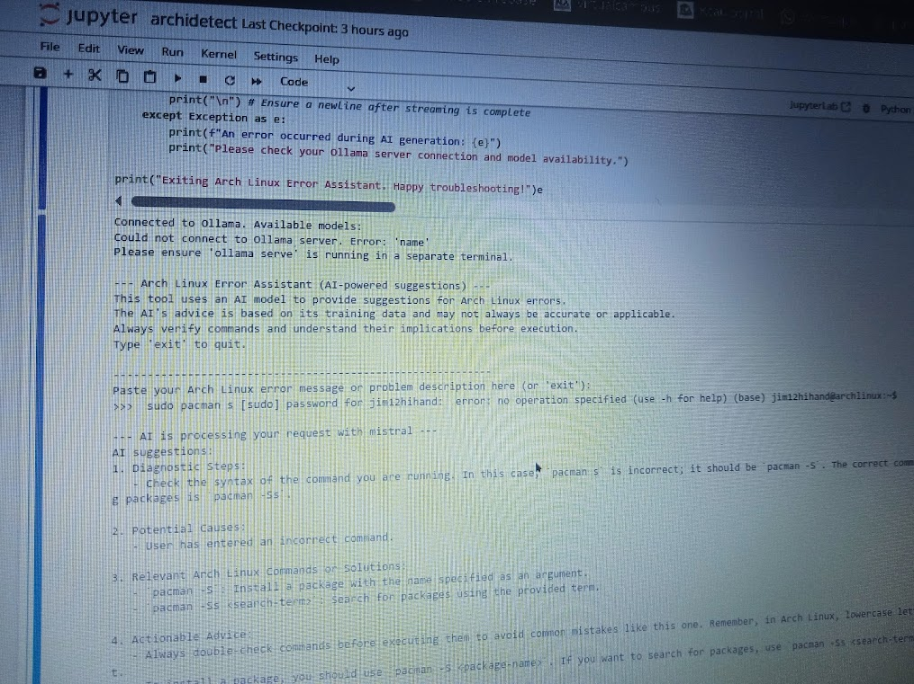
Archidetect is an AI-powered command-line tool designed to help troubleshoot and resolve Arch Linux errors using locally running language models via Ollama. The tool connects to a local Ollama server and uses models like Mistral to analyze system errors and provide intelligent diagnostic advice and solutions.